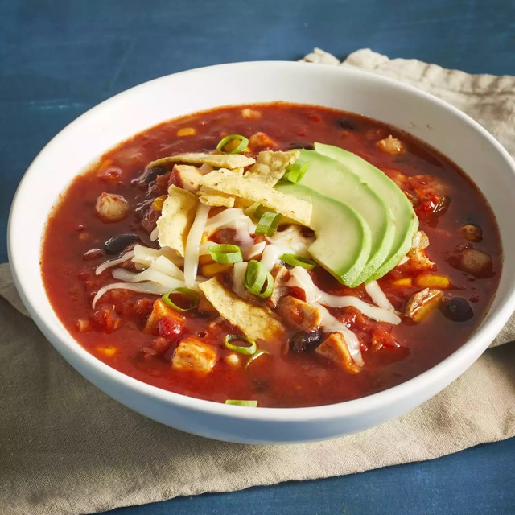

Chicken Tortilla Soup

Description
Chicken tortilla soup is one of the best authentic Mexican dishes to have.
This dish is made with chicken broth, tomatoes, garlic, onion, chiles,
fried tortilla strips. Other vartiations include beans. This dish is best
served with cheese and freshly cut avacado to top it.
Ingredients
- 1 tablespoon olive oil
- 1 can (10.5 ounces) condensed chicken broth
- 1 can (28 ounces) crushed tomatoes
- 3 cloves garlic, minced
- 1 medium onion, chopped
- 1 (4 ounces) can chopped green chile peppers
- 1.25 cups water
- 2 teaspoons chili powder
- 1 teaspoon dried oregano
- 1 (15 ounces) can black beans, rinsed and drained
- 2 large boneless chicken breast halves, cooked and
cut into bite-sized pieces
- 1 cup whole corn kernels, cooked
- 1 cup white hominy
- 1/4 cup chopped fresh cilantro
- 1/2 cup crushed tortilla chips, or to taste
- 2 medium avocados, sliced, or to taste
- tablespoons chopped green onions, or to taste
Steps
- Heat oil in a stockpot over medium heat.
Add onion and garlic; saute until soft,
about 5 minutes. Stir in crushed tomatoes,
condensed broth, water, chili powder, and
oregano; bring to a boil. Reduce heat and
simmer for 5 to 10 minutes.
- Stir in black beans, cooked chicken, corn,
hominy, chile peppers, and cilantro. Simmer
for 10 minutes
- Ladle soup into individual serving bowls,
and top with crushed tortilla chips, avocado
slices, Monterey Jack cheese, and green onions.